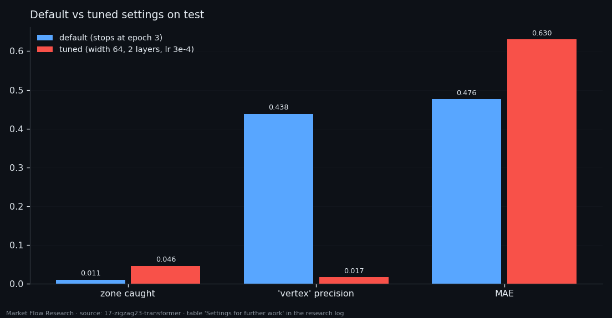
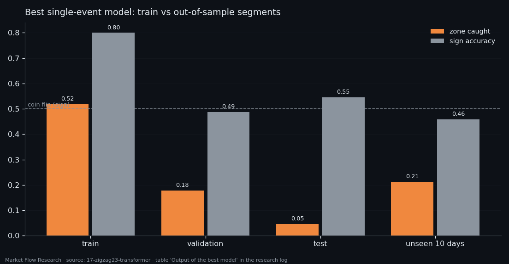

Same Data, Different Readout — How a Transformer Fails Differently From an Attention Query
We repeated the previous study exactly — same 2.3% zigzag target, same pivot zone, same loss, split and seed — and changed one thing: how the network reads its own sequence. Averaging the 13 steps instead of letting a learned query pick them cut the error from 0.554 to 0.476 and made "vertex" calls 44% precise instead of 3%. Tuning then turned the same model into a noisy caller again. And past the end of the dataset, both readouts lose the direction. The readout decides how a network is wrong, not whether it is right.
① Averaging vs a learned query
The setup is identical to the previous article: 13 EMA periods × 4 book features per event, a 2.3% zigzag on a 90-event EMA of price as the target, the pivot zone `|y| ≥ 0.90` within ±40 events, a spread-penalised weighted MSE, a time split and seed 0. Every number here compares directly.
The only difference is the readout. Both networks run the same `TransformerEncoder` over the 13 periods; the `wattn` net then weights the steps with a learned query, the transformer simply takes their mean.
With default settings the mean readout stays closer to the constant instead of stretching: test MAE 0.476 (wattn 0.554, constant 0.479), R² −0.046 (wattn −0.462). The price is spread — 0.629 of the target's against 0.969. And the character of the errors changes completely: the transformer says "vertex" 16 times on test and is right 7 times — 43.8% precision — while wattn said it 798 times and hit 25. The flip side: it catches only 1.1% of the zone. It mostly stays silent.

② A grid that found one lucky run
Stopping at epoch 3 was a hint that the settings deserved a search, so the transformer — unlike wattn — got the full procedure: a coarse grid, a fine grid around the best, then training length.
The coarse grid had 24 configurations; 21 hit the zone zero times on validation, 14 of them stopping after 2–8 epochs. The best (width 64, 2 layers, dropout 0.1, lr 3e-4; 101,185 parameters) caught 49 of 275 zone events. The fine grid around it, 27 neighbours: 21 with zero hits again, nothing better. That is not a plateau around an optimum — it is one run that broke away from the rest. Patience matters too: with 10 epochs of patience the same config stops at epoch 3 and catches nothing; with 30 it reaches epoch 20 and catches 17.8%.
On test, tuning buys hits with noise: the output spread lands exactly on the target's (1.064), the zone share rises fourfold to 4.6% — and the model now says "vertex" 1,758 times on 9,861 events, precision 1.7%, with MAE 0.630 and R² −0.851. Neither setting gets closer to the vertices themselves: 0.840 vs 0.843 remaining distance in the 0.1 band.

③ Longer windows and ten unseen days
With windows of K = 5 … 50 events, context again adds neither accuracy nor direction: MAE stays at 0.51–0.58, sign at 52–57%, with no trend in K. Hits jump — 9.1% at K = 5, 19.9% at 10, zero at 15–25, 25.7% at 45, zero at 50. The transformer hits more often than wattn at the same K, but the zeros sit in the same places: the same instability with a larger amplitude. The best windowed model (K = 10, 206,465 parameters) was chosen at epoch 1 — essentially an untrained model catching zone by scatter.
The saved single-event model then met 16–27 August 2026. It caught 39 of 184 zone events — 21.2%, more than validation and test combined — but only because it called "vertex" 509 times on 2,945 events (precision 7.7%), with a median of 281 events (≈ 16 hours) from the nearest real pivot. Pearson −0.150, sign 45.8%, R² −1.49: past the end of its data, the model is worse than a coin, exactly like wattn (−0.226, 44.9%).
The conclusion is architectural and short. The readout changes how a network is wrong — cautious and precise, or bold and noisy. It does not change whether it holds the direction out of sample. Both networks hit the same ceiling as the correlations in study 11: about |r| ≈ 0.29 between these features and this target on train, and nonlinearity inside one event does not raise it. The next step is not a third architecture but different features.

Reproduce this study
- Research log (.md, Ukrainian): goal, data, plan, scripts, every confirmed stage and table — enough to rerun the study
- Reproduction kit (.zip): the study's scripts, project rules and base scripts that build every class
If this changed how you read the tape, the natural next step is Volume Is the Fuel — Not the Steering Wheel — We recorded the Binance order book every second for six coins over five months and ran eighteen tests on what volume really does.
Volume Is the Fuel — Not the Steering Wheel
We recorded the Binance order book every second for six coins over five months and ran eighteen tests on what volume really does.
About Market Research Lab — What We Collect and Why
Most market commentary is storytelling.
From Calm to Calm: a Standard for What Counts as a Signal (BTC)
We stopped defining market signals with a stopwatch.
The Wall That Goes Quiet: What Resting Liquidity Predicts
We measured resting limit liquidity sitting on both sides of the book second by second across six coins, and asked the only question that matters:….
Comments
Discussion is powered by GitHub. Enable it by adding secrets/giscus.json (repo IDs from giscus.app).